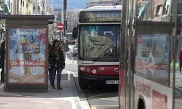

GRANADA


GRANADA
Doce meses de cuenta atrás para el nuevo sistema de autobuses urbanos
Autobus línea 5 en camino de ronda
Un día, antes del mes de mayo de 2014, la ciudad despertará con un paisaje urbano distinto. Las tradicionales líneas de autobús habrán desaparecido. Ya no se podrá coger el 8, ni el 33, ni el 20. En su lugar, habrá grandes vehículos que circularán en solitario por el eje central de la ciudad, entre Caleta y el Palacio de Congresos. Será conocida como la Línea de Alta Capacidad (LAC). Y de esos dos puntos partirán las líneas que llegarán a los barrios, nombradas con una letra y un número. Las líneas que vayan a la zona Norte se nombrarán con una ‘N’, seguida de un número; las del Centro llevarán una ‘C’, seguidas de número; las señalizadas con una ‘U’ serán las universitarias que harán recorridos transversales; y las que vayan a la zona Sur irán precedidas de la letra ‘S’.
La concejala de Movilidad, Telesfora Ruiz, destacó que este cambio no puede hacerse de forma paulatina, así que el cambio se notará de un día para otro. Además, con este nuevo sistema de autobuses los billetes no se picarán en el interior del bus, sino en una canceladora situada en la calle.
En el acuerdo cerrado con Rober para los próximos diez años se incluye la puesta en marcha de este nuevo mapa de autobuses entre el 1 de enero y el 30 de abril de 2014 y está supeditado a la compra de los grandes vehículos que se usarán para la LAC.
La concejala de Movilidad apuntó que en los próximos meses se hará un esfuerzo por informar a los ciudadanos sobre el nuevo sistema de autobuses.

Comentarios
Político que utiliza hasta para ir a comprar el pan el coche oficial
A mí el nuevo sistema me parece increible